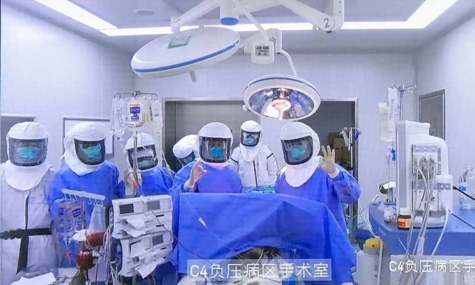
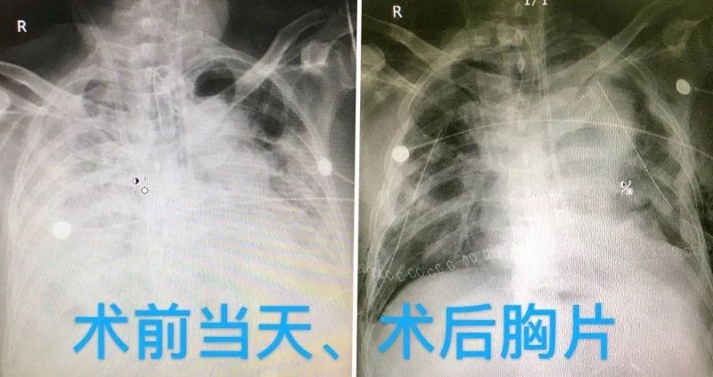

伊朗确诊日增65%后已近千，军方成立“圣战基地”抗击疫情
原文链接 备份链接 图片来源：Press TV 记者：肖恩 “ 伊朗新冠肺炎确诊病例数已超过日本，在海外国家中仅次于韩国和意大利。 ” 伊朗卫生部3月1日通报称，24小时内，该国新增确诊病例385例，累计978例，其中死亡54例，治愈出 …
匡小颖/北京头条客户端
3月1日，北京青年报记者从著名肺移植专家陈静瑜处了解到，2月29日，陈静瑜团队在无锡成功进行全球首例新冠肺炎双肺移植手术。患者为59岁男性，确诊新冠肺炎后，经过插管+ECMO和药物治疗后，连续核酸检测呈阴性，但双肺功能已严重受损且不可逆。患者术后状态平稳。
业内专家认为，这例新冠肺炎危重症病例肺移植救治手段对降低死亡率有较大意义。

3月1日凌晨，无锡全国人大代表、中日友好医院肺移植科主任、南医大无锡市人民医院副院长陈静瑜发文称，无锡完成首例新冠肺炎肺移植。
3月1日上午，北青报记者从陈静瑜处了解到，2月29日在江苏省卫健委、省防控医疗专家全力支持下，陈静瑜团队历经5个小时鏖战在无锡成功进行全球首例新冠肺炎病例双肺移植手术。
该新冠肺炎病例在江苏省，男，59岁，1月23日发病，1月26日确诊COVID-19，2月7日气管插管，2月22日ECMO，2月24日转至无锡市传染病医院，病人经气管插管+ECMO和药物治疗后，连续核酸检测呈阴性，但双肺功能已严重受损且不可逆。
2月29日，在江苏省卫健委支持下，无锡市卫生系统打破常规、整合一切医疗资源，由陈静瑜教授团队对该病例进行了双肺移植手术。肺源系外地脑死亡患者爱心捐献，在外省获取经高铁转运7小时至无锡。截至目前，该病人术后已经清醒，移植双肺功能氧合良好，生命体征平稳。
陈静瑜说，新冠肺炎病例接受肺移植手术最主要有三个医学前提条件：一是病人经呼吸机+ ECMO维持，双肺呼吸衰竭不可逆；二是核酸检测连续多次呈阴性；三是其他脏器功能基本正常，全身状况能够承受肺移植手术。

“这类手术风险很大，移植医护人员要在负压手术室间、全程穿着隔离防护服开展手术，对心理和体力考验极大。”陈静瑜说，“为了病人移植手术成功、同时力争医护人员零感染，在江苏省市领导支持下，医疗团队术前进行了周密的部署准备工作，下一步团队将密切维护好病人，重点探索此类患者的围术期管理，做好移植后抗排异、抗感染后续治疗，总结经验为更多晚期的新冠肺炎危重症病例救治打开希望之门。”
本期编辑 周玉华
推荐阅读


原文链接 备份链接 图片来源：Press TV 记者：肖恩 “ 伊朗新冠肺炎确诊病例数已超过日本，在海外国家中仅次于韩国和意大利。 ” 伊朗卫生部3月1日通报称，24小时内，该国新增确诊病例385例，累计978例，其中死亡54例，治愈出 …
原文链接 备份链接 意大利伦巴第大区一所医院。图片来源：CNN “ 全球新冠肺炎疫情播报，持续更新。 ” （本文持续更新中。文中段首所示时间为本文更新时间。） 世卫组织 0800【中国境外日新增确诊病例连续第4日超过中国】 根据世界卫生组 …
原文链接 备份链接 美国冠状肺炎疫情近日加速蔓延，西海岸社区传播疑似病例增加 工作人员把一个担架从救护车移至柯克兰生命护理中心，该护理中心已发现两起新型冠状病毒的确诊病例。图/法新 文 |《财经》特派记者 金焱 发自华盛顿 编辑 | 苏 …
原文链接 备份链接 图片来源：推特 记者 ：肖恩 “ 美国已发现四例感染路径未明的疑似社区传播案例，都来自西岸。美国媒体称，这可能意味着美国西岸存在新冠病毒“社区传播”的可能。 ” 在中国境外新冠肺炎确诊病例突破6000人的同时，美澳两国 …
原文链接 备份链接 当地时间2月29日，美国华盛顿州西雅图市国王县卫生官员报告称，一名50多岁的男性新冠肺炎患者当天在当地一家医院死亡。这是美国首例新冠肺炎患者死亡该病例，就死者感染路径，美国疾控中心国家免疫和呼吸系统疾病主任梅索尼 …